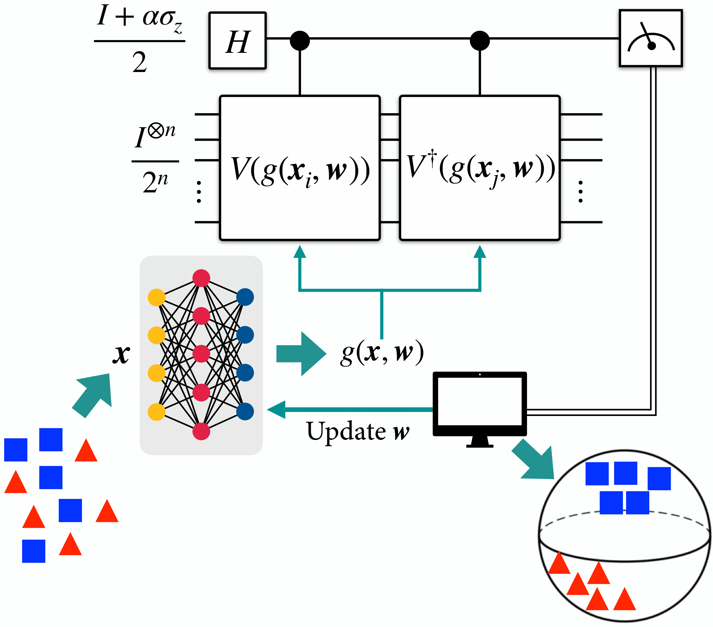

This tutorial demonstrates the implementation of neural quantum embedding (NQE) using deterministic quantum computation with one clean qubit (DQC1). More experimental results for NQE-DQC1, including real-hardware experiments on NMR device, can be found in this paper[1]. If you want to know more about NQE read the original paper[2] or follow the introductory tutorial. If you need more information about DQC1 protocal, have a look at this introduction.
This tutorial was tested under following environments:
NQE tries to find the optimal quantum embedding that maximizes the trace distance between classes. To do this, NQE protocol minimizes a implicit loss function motivated by fidelity overlap between two quantum states, \[d_{\mathrm{fid}}(x_i, x_j) = \mathrm{Tr}\left(\rho(x_i)^\dagger \rho(x_j)\right)\], where \(\rho(x) = U(x)\vert 0 \rangle^{\otimes n}\) for some quantum embedding function \(U\).
Instead of directly using the fidelity, we can consider using a distance between two quantum embeddings, \[ d_{\mathrm{HS}}(x_i, x_j) = \frac{1}{2^n}\mathrm{Tr}\left(U^\dagger(x_i) U(x_j)\right).\] This is also known as a Hilbert-Schmidt distance.
Deterministic quantum computation with one clean qubit (DQC1), despite being a subuniversal quantum computation, can compute interesting quantities that classical computers can not. One of them is computing the trace of an exponentially large unitary matrix, and we will use it to compute the Hilbert-Schmidt distance between quantum embeddings.

All the contents of NQE-DQC1 demo is almost exactly same as the original NQE demo. The only difference is we use Hilbert-Schmidt distance between quantum embeddings, instead of quantum state overlap. So I will skip details.
/Users/tak/anaconda3/envs/new/lib/python3.10/site-packages/requests/__init__.py:86: RequestsDependencyWarning: Unable to find acceptable character detection dependency (chardet or charset_normalizer).
warnings.warn(
Define Quantum Embedding and NQE-DQC1
Define IQP type Quantum Embedding (ZZ Feature Map).
dev = qml.device('default.qubit', wires=4)@qml.qnode(dev, interface="torch")def circuit(inputs): QuantumEmbedding(inputs[0:4]) qml.adjoint(QuantumEmbedding)(inputs[4:8])return qml.probs(wires=range(4))class Model_HS(torch.nn.Module):def__init__(self):super().__init__()self.qlayer1 = qml.qnn.TorchLayer(circuit, weight_shapes={})self.linear_relu_stack1 = nn.Sequential( nn.Linear(4, 8), nn.ReLU(), nn.Linear(8,8), nn.ReLU(), nn.Linear(8,4) )self.matrix_fn = qml.matrix(circuit)def forward(self, x1, x2): x1 =self.linear_relu_stack1(x1) x2 =self.linear_relu_stack1(x2) x = torch.concat([x1, x2], 1) x = [torch.real(torch.trace(self.matrix_fn(a))) for a in x] x = torch.stack(x, dim =0)return x /2**4
The only modification from the original demo is this line of code.
x = [torch.real(torch.trace(self.matrix_fn1(a))) for a in x]
Unlike the original demo, we are computing trace of an unitary, which measures the Hilbert-Schmidt distance.
Optimize NQE
Code
batch_size =25iterations =200#make new data for hybrid modeldef new_data(batch_size, X, Y): X1_new, X2_new, Y_new = [], [], []for i inrange(batch_size): n, m = np.random.randint(len(X)), np.random.randint(len(X)) X1_new.append(X[n]) X2_new.append(X[m])if Y[n] == Y[m]: Y_new.append(1)else: Y_new.append(0) X1_new, X2_new, Y_new = torch.tensor(X1_new).to(torch.float32), torch.tensor(X2_new).to(torch.float32), torch.tensor(Y_new).to(torch.float32)return X1_new, X2_new, Y_newmodel = Model_HS()model.train()loss_fn = torch.nn.MSELoss()opt = torch.optim.SGD(model.parameters(), lr=0.01)for it inrange(iterations): X1_batch, X2_batch, Y_batch = new_data(batch_size, X_train, Y_train) pred = model(X1_batch, X2_batch) loss = loss_fn(pred, Y_batch) opt.zero_grad() loss.backward() opt.step()if it %50==0:print(f"Iterations: {it} Loss: {loss.item()}")torch.save(model.state_dict(), "model.pt")
/var/folders/s2/t3n82l2s329dh9dttmtv7vr00000gn/T/ipykernel_22387/3446470592.py:16: UserWarning: Creating a tensor from a list of numpy.ndarrays is extremely slow. Please consider converting the list to a single numpy.ndarray with numpy.array() before converting to a tensor. (Triggered internally at /Users/runner/work/pytorch/pytorch/pytorch/torch/csrc/utils/tensor_new.cpp:257.)
X1_new, X2_new, Y_new = torch.tensor(X1_new).to(torch.float32), torch.tensor(X2_new).to(torch.float32), torch.tensor(Y_new).to(torch.float32)
Y_train = [-1if y ==0else1for y in Y_train]Y_test = [-1if y ==0else1for y in Y_test]class x_transform(torch.nn.Module):def__init__(self):super().__init__()self.linear_relu_stack1 = nn.Sequential( nn.Linear(4, 8), nn.ReLU(), nn.Linear(8, 8), nn.ReLU(), nn.Linear(8, 4) )def forward(self, x): x =self.linear_relu_stack1(x)return x.detach().numpy()model_transform = x_transform()model_transform.load_state_dict(torch.load("model.pt"))def statepreparation(x, NQE):if NQE: x = model_transform(torch.tensor(x)) QuantumEmbedding(x)def U_SU4(params, wires): # 15 params qml.U3(params[0], params[1], params[2], wires=wires[0]) qml.U3(params[3], params[4], params[5], wires=wires[1]) qml.CNOT(wires=[wires[0], wires[1]]) qml.RY(params[6], wires=wires[0]) qml.RZ(params[7], wires=wires[1]) qml.CNOT(wires=[wires[1], wires[0]]) qml.RY(params[8], wires=wires[0]) qml.CNOT(wires=[wires[0], wires[1]]) qml.U3(params[9], params[10], params[11], wires=wires[0]) qml.U3(params[12], params[13], params[14], wires=wires[1])def QCNN(params): param1 = params[0:15] param2 = params[15:30] U_SU4(param1, wires=[0, 1]) U_SU4(param1, wires=[2, 3]) U_SU4(param1, wires=[1, 2]) U_SU4(param1, wires=[3, 0]) U_SU4(param2, wires=[0, 2])@qml.qnode(dev)def QCNN_classifier(params, x, NQE): statepreparation(x, NQE) QCNN(params)return qml.expval(qml.PauliZ(2))steps =100learning_rate =0.01batch_size =25def Linear_Loss(labels, predictions): loss =0for l,p inzip(labels, predictions): loss +=0.5* (1- l * p)return loss /len(labels)def cost(weights, X_batch, Y_batch, Trained): preds = [QCNN_classifier(weights, x, Trained) for x in X_batch]return Linear_Loss(Y_batch, preds)def circuit_training(X_train, Y_train, Trained): weights = np.random.random(30, requires_grad =True) opt = qml.NesterovMomentumOptimizer(stepsize=learning_rate) loss_history = []for it inrange(steps): batch_index = np.random.randint(0, len(X_train), (batch_size,)) X_batch = [X_train[i] for i in batch_index] Y_batch = [Y_train[i] for i in batch_index] weights, cost_new = opt.step_and_cost(lambda v: cost(v, X_batch, Y_batch, Trained), weights) loss_history.append(cost_new)if it %50==0:print("iteration: ", it, " cost: ", cost_new)return loss_history, weightsloss_history_without_NQE, weight_without_NQE = circuit_training(X_train, Y_train, Trained=False)loss_history_with_NQE, weight_with_NQE = circuit_training(X_train, Y_train, Trained=True)
/Users/tak/anaconda3/envs/new/lib/python3.10/site-packages/autograd/numpy/numpy_vjps.py:943: ComplexWarning: Casting complex values to real discards the imaginary part
onp.add.at(A, idx, x)
import seaborn as snsimport matplotlib.pyplot as pltplt.rcParams['figure.figsize'] = [10, 5]fig, ax = plt.subplots()clrs = sns.color_palette("husl", 2)with sns.axes_style("darkgrid"): ax.plot(range(len(loss_history_without_NQE)), loss_history_without_NQE, label="Without NQE", c=clrs[0]) ax.plot(range(len(loss_history_with_NQE)), loss_history_with_NQE, label="With NQE", c=clrs[1])ax.set_xlabel("Iteration")ax.set_ylabel("Loss")ax.set_title("QCNN Loss Histories")ax.legend()
Code
def accuracy_test(predictions, labels): acc =0for l, p inzip(labels, predictions):if np.abs(l - p) <1: acc = acc +1return acc /len(labels)accuracies_without_NQE, accuracies_with_NQE = [], []prediction_without_NQE = [QCNN_classifier(weight_without_NQE, x, NQE=False) for x in X_test]prediction_with_NQE = [QCNN_classifier(weight_with_NQE, x, NQE=True) for x in X_test]accuracy_without_NQE = accuracy_test(prediction_without_NQE, Y_test) *100accuracy_with_NQE = accuracy_test(prediction_with_NQE, Y_test) *100print(f"Accuracy without NQE: {accuracy_without_NQE:.3f}")print(f"Accuracy with NQE: {accuracy_with_NQE:.3f}")
Accuracy without NQE: 61.000
Accuracy with NQE: 98.000
As expected, NQE-DQC1 effectively optimizes the quantum embedding and improve the classification performance!
References
Hongfeng Liu, Tak Hur, Shitao Zhang. Neural quantum embedding via deterministic quantum computation with one qubit. arXiv.2501.15359
Tak Hur, Israel F. Araujo, Daniel K. Park. Neural Quantum Embedding: Pushing the Limits of Quantum Supervised Learning. Physical Review A (2024).
Citation
If you use this code in your research, please cite our paper:
@article{liu2025neural,
title={Neural quantum embedding via deterministic quantum computation with one qubit},
author={Liu, Hongfeng and Hur, Tak and Zhang, Shitao and Che, Liangyu and Long, Xinyue and Wang, Xiangyu and Huang, Keyi and Fan, Yu-ang and Zheng, Yuxuan and Feng, Yufang and others},
journal={arXiv preprint arXiv:2501.15359},
year={2025}
}